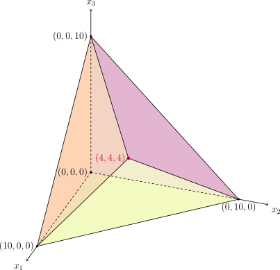

Thuật toán đơn hình (Simplex)
Kiến thức trước: Cơ sở quy hoạch tuyến tính
Giới thiệu
Trong thi đấu thuật toán, phương pháp đơn hình (simplex) thường được dùng để giải bài toán quy hoạch tuyến tính. Tuy nhiên, do các bài toán quy hoạch tuyến tính trong thi đấu thường có cấu trúc đặc biệt và có thể chuyển về bài toán luồng mạng, nên phương pháp đơn hình không dùng nhiều và hiệu quả không bằng các thuật toán chuyên cho luồng mạng.
Khái niệm cơ bản
Giả sử cần giải bài toán quy hoạch tuyến tính dạng chuẩn sau với \(n\) biến quyết định và \(m+n\) ràng buộc:
Giả sử hệ phương trình do \(m\) ràng buộc đẳng thức xác định có nghiệm, và \(A\) đầy hạng, thì \(\operatorname{rank}A = m \le n\).
Một ví dụ
Trước khi mô tả chặt chẽ các bước của phương pháp đơn hình, ta xét một ví dụ cụ thể để dễ hiểu.
Ví dụ
Xét bài toán quy hoạch tuyến tính
Thêm biến dư, ta được dạng chuẩn:
Quan sát các ràng buộc đẳng thức, chúng tương đương với việc biểu diễn \(x_4,x_5,x_6\) theo \(x_1,x_2,x_3\). Viết lại:
Từ dạng này thấy rõ, nếu đặt \(x_1=x_2=x_3=0\) thì có một nghiệm khả thi:
Giá trị tương ứng \(z=0\). Ta gọi các biến đặt bằng 0 là biến phi cơ sở (non-basic variable), ở đây là \(x_1,x_2,x_3\); còn lại \(x_4,x_5,x_6\) là biến cơ sở (basic variable).
Đây không phải nghiệm tối ưu. Nếu tăng \(x_1,x_2,x_3\) sao cho \(x_4,x_5,x_6\) vẫn không âm thì nghiệm vẫn khả thi. Vì hệ số của \(x_1,x_2,x_3\) trong hàm mục tiêu đều âm, tăng chúng sẽ làm giảm giá trị mục tiêu. Chẳng hạn tăng \(x_1\). Để giảm mục tiêu nhiều nhất, tăng \(x_1\) tối đa, nhưng phải đảm bảo \(x_4,x_5,x_6\ge 0\). Do đó \(x_1\) tối đa là
Khi đó, nghiệm trở thành
Vì \(x_1\) trở thành biến cơ sở, để quay lại dạng ban đầu (3 biến cơ sở biểu diễn theo 3 biến phi cơ sở), cần chọn biến phi cơ sở mới. Vì \(x_5,x_6\) đều bằng 0, chọn một trong hai, chẳng hạn \(x_5\). Khi đó
thay vào, ta được
Ta lại có dạng ban đầu.
Xét hàm mục tiêu: hệ số của \(x_3\) vẫn âm, có thể tăng \(x_3\). Để \(x_4,x_1,x_6\ge 0\), \(x_3\) tối đa
Lưu ý vì trong biểu thức \(x_6\), hệ số của \(x_3\) dương, nên tăng \(x_3\) không làm \(x_6\) âm; do đó dấu ngoặc chỉ có hai mục. Khi \(x_3=10\), \(x_1,x_4\) đều bằng 0, có thể chọn một làm biến phi cơ sở, chọn \(x_4\).
Khi đó
và bài toán thành
Đặt \(x_5=x_2=x_4=0\) ta đọc được nghiệm khả thi
giá trị \(z=-120\).
Tiếp tục. Vì hệ số \(x_2\) âm, có thể tăng \(x_2\); nhưng để \(x_3,x_6\) không âm, \(x_2\) tối đa
Giá trị nhỏ nhất ở biểu thức \(x_6\), nên khi \(x_2=4\) thì \(x_6=0\). Thay
ta được
Đặt \(x_5=x_6=x_4=0\) được
và \(z=-136\).
Vì hệ số của mọi biến phi cơ sở đều dương, không thể tiếp tục cải thiện, nên nghiệm hiện tại là tối ưu. Thuật toán dừng.
Trong ví dụ, thuật toán bắt đầu từ nghiệm khả thi và cải thiện mục tiêu đến khi không thể cải thiện nữa. Đó là ý tưởng cơ bản của đơn hình.
Nghiệm khả thi cơ bản
Do \(A\) đầy hạng, luôn chọn được tập con \(B\subseteq\{1,2,\cdots,n\}\) cỡ \(m\) sao cho \(A_B\) khả nghịch. Khi đó biểu diễn \(x_B\) theo \(x_N\):
Trong đó \(N=\{1,2,\cdots,n\}\setminus B\), \(A_B,A_N\) là các cột tương ứng, \(x_B,x_N\) là các thành phần tương ứng. Nếu \(i\in B\) thì \(x_i\) là biến cơ sở (basic variable); nếu \(i\in N\) là biến phi cơ sở (non-basic variable). Tập biến cơ sở gọi là một cơ sở (basis), ký hiệu \(B\).
«Cơ sở»
Tên gọi «cơ sở» có thể hiểu theo đại số tuyến tính. Gọi không gian tuyến tính do các cột của \(A\) sinh là \(V\), thì các cột ứng với \(B\) là một cơ sở của \(V\).
Trong biểu thức \(x_B\), đặt \(x_N=0\) ta được một nghiệm của các ràng buộc đẳng thức1
Nghiệm này gọi là nghiệm cơ bản (basic solution). Nếu thêm điều kiện \(x\ge 0\) thì là nghiệm khả thi cơ bản (basic feasible solution, BFS). Trong đơn hình, luôn duy trì nghiệm hiện tại là BFS.
Pivot (chuyển trục)
Mỗi lần lặp của đơn hình gọi là một pivot. Mỗi pivot loại một biến cơ sở cũ, thêm một biến cơ sở mới, cải thiện giá trị mục tiêu.
«Pivot»
«Pivot» có thể hiểu theo đại số tuyến tính: cơ sở \(B\) tương ứng với các trục tọa độ trong biểu diễn của không gian \(V\), pivot là quay một trục sang vị trí mới.
Để chọn biến vào cơ sở, biểu diễn mục tiêu theo biến phi cơ sở:
Đặt \(x_N=0\) thì giá trị tại BFS là \(z=c_B^TA_B^{-1}b\). Hệ số của hạng hai là
Vì \(c_B - A_B^T(A_B^{-1})^Tc_B = 0\), đặt
là chi phí giảm (reduced cost) tại nghiệm khả thi. Thành phần \(\tilde c_i<0\) nghĩa là tăng \(x_i\) sẽ cải thiện mục tiêu. Biến như vậy (chỉ có thể là biến phi cơ sở) gọi là biến vào cơ sở (entering variable).
Chọn xong biến vào, cần chọn biến ra: biến cơ sở nào về 0 trước. Thay \(x_N=(x_i,0)\) vào \(x_B\):
Do đó mức tăng tối đa:
Chỉ số \(j\) đạt min là biến cơ sở ra (leaving variable). Cách chọn gọi là kiểm tra tỉ lệ tối thiểu (minimum ratio test).
Gọi biến vào là \(x_i\), biến ra là \(x_{i'}\). Sau pivot, biến cơ sở là \(x_{B\setminus\{i\}\cup\{i'\}}\), biến phi cơ sở là \(x_{N\setminus\{i'\}\cup\{i\}}\).
Điều kiện dừng
Đơn hình là quá trình pivot liên tục. Các tình huống đặc biệt:
- Không có biến vào, tức \(\tilde c\ge 0\). Khi đó không thể cải thiện, nghiệm hiện tại là tối ưu. Chứng minh cần điều kiện bổ sung bù. Đặt \(y=(A_B^{-1})^Tc_B\). Vì luôn duy trì \(x\) khả thi và thỏa bổ sung bù:
Nếu \(y\) là nghiệm khả thi của đối ngẫu (\(A^Ty\le c\)), thì \(x\) và \(y\) là tối ưu. Điều kiện này chính là \(\tilde c\ge 0\).
«Giá bóng»
\(y=(A_B^{-1})^Tc_B\) gọi là vector đối ngẫu. Khi BFS là tối ưu của bài toán gốc, \(y\) là nghiệm tối ưu của bài toán đối ngẫu. Vì \(y\) là đạo hàm giá trị theo hằng số ràng buộc:
nên còn gọi là giá bóng (shadow price).
-
Không có biến ra, tức \(A_B^{-1}A_i\le 0\). Khi đó không có “nút cổ chai”, có thể tăng \(x_i\) vô hạn làm mục tiêu giảm đến \(-\infty\). Bài toán vô hạn, thuật toán dừng.
-
Biến vào/ra có thể không duy nhất. Cách chọn không phù hợp có thể làm thuật toán pivot quá nhiều hoặc lặp vô hạn. Cần quy tắc pivot.
Bảng đơn hình
Khi hiện thực pivot, chỉ cần duy trì ma trận hệ số sau mỗi pivot:
Tương ứng bài toán:
Ma trận \(\tilde T_B\) gọi là bảng đơn hình rút gọn (condensed simplex tableau). Ô trái trên là giá trị hiện tại (âm), hàng 0 cột \(i\) là chi phí giảm của biến phi cơ sở \(x_{N_i}\), hàng \(j\) cột 0 là giá trị biến cơ sở \(x_{B_j}\), còn \(A_B^{-1}A_N\) là hệ số trong biểu diễn.
Mọi thông tin pivot đều có trong bảng. Một pivot gồm:
- Chọn cột \(i\) sao cho \((\tilde T_B)_{0i}<0\). Nếu không có, nghiệm hiện tại tối ưu, giá trị là \(-(\tilde T_B)_{00}\).
- Chọn hàng \(j\) sao cho \((\tilde T_B)_{ji}>0\) và \((\tilde T_B)_{j0}/(\tilde T_B)_{ji}\) nhỏ nhất. Nếu không có, bài toán vô hạn.
- Cho \(x_{N_i}\) vào cơ sở, \(x_{B_j}\) ra cơ sở, cập nhật bảng.
Cập nhật bảng: trước cập nhật, hàng \(j\) biểu diễn
Cần biểu diễn \(x_{N_i}\) theo \(x_{N\setminus\{N_i\}\cup\{B_j\}}\):
Thay vào các dòng khác, được
Dù phức tạp, khi cài đặt chỉ cần:
- Cập nhật hàng \(j\): đặt \(\alpha=(\tilde T_B)_{ji}\), đưa phần tử cột \(i\) thành 1, chia cả hàng cho \(\alpha\);
- Với \(j'\neq j\): đặt \(\beta=(\tilde T_B)_{j'i}\), đưa cột \(i\) về 0 bằng cách trừ \(\beta\) lần hàng \(j\).
«Bảng đơn hình»
Bảng đơn hình (simplex tableau) là
So với bảng rút gọn, nó thêm \(m\) cột ứng với \(m\) biến cơ sở; các cột này là \(e_j\) (chỉ hàng \(j\) là 1, còn lại 0). Vì không có thêm thông tin nên thường bỏ, tạo bảng rút gọn.
Nhìn từ bảng đầy đủ, mọi bảng \(T_B\) có thể được từ một bảng \(T_0\) bằng nhân trái với ma trận khả nghịch \(L_B\):
nên có thể chuyển đổi bằng phép biến đổi hàng sơ cấp. Vì vậy khi cập nhật, chỉ cần biến đổi để cột biến vào thành \(e_j\). Chiếu xuống bảng rút gọn chính là quy trình trên.
Cài đặt tham khảo cập nhật bảng:
Cài đặt tham khảo
1 2 3 4 5 6 7 8 9 10 11 12 13 14 15 16 | |
Từ đó thấy mỗi lần cập nhật bảng mất \(O(mn)\). Chọn biến vào/ra cũng không vượt \(O(mn)\), nên một pivot là \(O(mn)\).
Để dễ hiểu, liệt kê các bước cho ví dụ trên dùng bảng rút gọn:
Ví dụ (tiếp)
Ban đầu, bảng rút gọn:
Theo hàng 0, có thể chọn \(x_1,x_2,x_3\) vào. Chọn \(x_1\). Theo kiểm tra tỉ lệ, có thể chọn \(x_5,x_6\) ra. Chọn \(x_5\). Bảng cập nhật:
Theo hàng 0, chọn \(x_2,x_3\) vào. Chọn \(x_3\). Theo kiểm tra tỉ lệ, có thể chọn \(x_4,x_1\) ra. Chọn \(x_4\). Bảng:
Theo hàng 0, chỉ có thể chọn \(x_2\) vào. Theo kiểm tra tỉ lệ, chỉ có thể chọn \(x_6\) ra. Cập nhật:
Theo hàng 0, không có biến vào. Vậy nghiệm hiện tại
là tối ưu, giá trị tối ưu (bài toán tối thiểu) là \(-136\).
Ngoài bảng rút gọn, còn có phương pháp đơn hình sửa đổi (revised simplex method), giảm độ phức tạp mỗi cập nhật xuống \(O(m^2)\), đặc biệt hiệu quả khi \(m\ll n\) hoặc \(A\) thưa.
Nền tảng hình học
Phần này nói về nền tảng hình học của đơn hình.
Với miền khả thi
theo phân tích:
- Nếu nghiệm tối ưu tồn tại, có thể chọn là một đỉnh của \(\mathcal D\). Giải bài toán là tìm đỉnh tối ưu.
- Mỗi đỉnh là nghiệm của hệ \(n\) ràng buộc chặt. Với dạng chuẩn, \(m\) đẳng thức luôn chặt, còn \(n-m\) ràng buộc chặt chọn từ điều kiện không âm, tương đương đặt \(x_N=0\). Khi đó \(Ax=b\) trở thành \(A_Bx_B=b\), nếu \(A_B\) khả nghịch thì \(x_B=A_B^{-1}b\). Nếu \(x_B\ge 0\) thì đó là đỉnh.
Thấy rằng khái niệm đỉnh trùng với BFS. Do đó chỉ cần tìm BFS tối ưu. Tuy nhiên số đỉnh là mũ, không thể duyệt hết.
Giải pháp là di chuyển dọc theo cạnh của miền khả thi, từ đỉnh này sang đỉnh kề. Hai đỉnh kề nằm trên cùng một cạnh nên chia sẻ ít nhất \(n-1\) ràng buộc chặt, khác nhau đúng 1 ràng buộc. Do đó, từ BFS \(x\) chỉ cần đổi một biến cơ sở thành biến phi cơ sở để được BFS kề \(x'\). Đó chính là pivot.
Vì vậy đơn hình là quá trình đi trên miền khả thi từ đỉnh này sang đỉnh kề, cải thiện mục tiêu.
Ví dụ (tiếp)
Trong ví dụ, miền khả thi là đa diện 3D có 5 đỉnh, như hình:

Quá trình giải tương ứng đường đi:
Chi tiết hiện thực
Bảng đơn hình giải được nhiều bài toán, nhưng với trường hợp tổng quát vẫn có nhiều chi tiết cần bàn.
Dạng slack
Cách chuyển về dạng chuẩn đã nói ở đây. Nhưng để dễ dùng đơn hình, còn cần \(A\) đầy hạng. Một cách thường dùng:
- Chuyển về dạng bất đẳng thức: \(\min\{c^Tx : Ax \le b,~ x \ge 0\}\);
- Thêm biến dư \(s\): \(\min\{c^Tx : Ax + s = b,~ x\ge 0,~ s \ge 0\}\).
Khi đó ma trận \((A,I)\) luôn đầy hạng, và luôn có nghiệm cơ bản (không nhất thiết khả thi) \((x,s)=(0,b)\). Dạng này gọi là dạng slack (slack form).
BFS ban đầu
Đơn hình giả định có BFS ban đầu. Đôi khi dễ tìm: nếu \(b\ge 0\) trong slack form thì \((x,s)=(0,b)\) là BFS, như ví dụ.
Trường hợp tổng quát dùng hai giai đoạn (two-phase). Giai đoạn 1 giải một bài toán khả thi để tìm BFS cho bài gốc; giai đoạn 2 từ BFS đó giải bài gốc.
Giả sử bài toán dạng chuẩn \(\min\{c^Tx : Ax = b \ge 0,~ x\ge 0\}\). Giai đoạn 1 giải:
Đây là bài toán khả thi, thêm biến nhân tạo (artificial variable) \(x_a\). Nó có BFS \((x,x_a)=(0,b)\), dùng đơn hình giải. Nếu giá trị tối ưu >0 thì bài gốc vô nghiệm. Nếu =0 thì biến nhân tạo ở nghiệm tối ưu bằng 0. Nếu còn biến nhân tạo là biến cơ sở, pivot để loại. Khi tất cả biến nhân tạo là phi cơ sở, BFS thu được dùng cho giai đoạn 2.
Cài đặt giai đoạn 1 không cần đưa biến nhân tạo tường minh
Khi khởi tạo một cơ sở \(B\) bất kỳ, có
Nếu \((A_B^{-1}b)_j\ge 0\) thì không cần biến nhân tạo; nếu <0 thì thêm \(x^-_{B_j}\):
Gọi \(L:=\{j:(A_B^{-1}b)_j<0\}\), bảng giai đoạn 1 là:
Rút gọn như bảng rút gọn (lấy hàng \(x_{B_{L}}^-\) nhân \(1^T\) cộng vào hàng 0, rồi bỏ 3 cột sau):
Bảng này giống bảng rút gọn, chỉ khác hàng cuối có dấu âm, biểu thị vẫn có biến nhân tạo (biến slack ban đầu chưa khả thi). Pivot theo:
- Nếu \(L=\varnothing\) thì dừng.
- Chọn biến vào \(x_{N_i}\) theo chi phí giảm âm ở hàng 0; nếu không có thì bài gốc vô nghiệm.
-
Chọn biến ra theo kiểm tra tỉ lệ tối thiểu, đồng thời đảm bảo biến khả thi vẫn khả thi và biến không khả thi vẫn không khả thi, tức chọn
\[ \arg\min_{j}\left\{\dfrac{(\tilde T_B)_{j0}}{(\tilde T_B)_{ji}}:(j\notin L\land(\tilde T_B)_{ji}>0)\lor(j\in L\land(\tilde T_B)_{ji}<0)\right\} \]nếu có nhiều, ưu tiên biến không khả thi.
-
Cho \(x_{N_i}\) vào, \(x_{B_j}\) ra, cập nhật bảng.
- Nếu \(j\in L\), loại \(j\) khỏi \(L\) (bỏ dấu âm) và cộng \((\tilde T_B)_{0i}\) vào 1.
Bỏ cột biến nhân tạo vì nếu chúng còn là biến cơ sở thì cột là \(e_j\); nếu không còn cơ sở thì không bao giờ vào lại. Khi biến nhân tạo ra khỏi cơ sở, thay bằng biến không nhân tạo, chính là mục đích bước cuối.
Cài đặt tham khảo:
Cài đặt tham khảo
1 2 3 4 5 6 7 8 9 10 11 12 13 14 15 16 17 18 19 20 21 22 23 24 25 26 27 28 29 30 31 32 33 34 35 36 37 38 39 40 41 42 43 44 45 | |
Trước khi pha 1 bắt đầu, thêm một hàng cho hàm mục tiêu pha 1. Pivot trên toàn bảng (bao gồm mục tiêu pha 2). Khi pha 1 kết thúc, mục tiêu pha 2 đã được cập nhật và có thể bắt đầu pha 2.
Hai giai đoạn cũng có thể thay bằng một lần đơn hình bằng cách dùng số lớn \(M\):
Không gán giá trị cụ thể cho \(M\), coi như một hằng dương đủ lớn. Cách này gọi là phương pháp \(M\) lớn (big \(M\) method).
Thuật toán ngây thơ có độ phức tạp thực tế là mũ
Vì slack form luôn có nghiệm cơ bản ban đầu (không nhất thiết khả thi), một ý tưởng đơn giản là từ nghiệm cơ bản không khả thi, liên tục pivot để đưa biến cơ sở âm ra ngoài và chọn biến phi cơ sở có hệ số âm vào, đến khi mọi biến cơ sở không âm. Cài đặt:
Cài đặt tham khảo
1 2 3 4 5 6 7 8 9 10 11 12 13 14 15 16 17 18 19 20 21 22 23 24 25 26 | |
Cách này đơn giản nhưng so với hai giai đoạn thì không có hàm mục tiêu đo mức “không khả thi”, nên thiếu hướng cải thiện rõ ràng. Thực nghiệm cho thấy số pivot thường \(O(2^m)\) (trong khi hai giai đoạn thường \(O(m)\)), và dễ lặp khi \(n,m\) lớn. Chỉ phù hợp khi \(n,m<50\).
Quy tắc pivot
Khi có nhiều lựa chọn biến vào/ra, cần quy tắc pivot. Dùng bảng đơn hình, các quy tắc đều tìm được biến vào/ra trong \(O(mn)\), nên mỗi pivot vẫn \(O(mn)\).
Chọn biến vào quyết định số pivot. Quy tắc thường gặp:
- Chọn biến vào đầu tiên gặp;
- Chọn biến vào có chỉ số nhỏ nhất (một phần của quy tắc Bland);
- Chọn biến vào có chi phí giảm tuyệt đối lớn nhất (\(|c_i|\)) (quy tắc Dantzig);
- Chọn biến vào làm cải thiện mục tiêu mỗi pivot lớn nhất (\(|c_i|\theta_i\));
- Chọn biến vào trên cạnh dốc nhất (cải thiện mục tiêu trên đơn vị độ dài cạnh), tức \(|c_i|/\|A_B^{-1}A_i\|\) lớn nhất;
- Chọn ngẫu nhiên biến vào.
Trong thực tế, quy tắc cạnh dốc nhất thường hiệu quả nhất2. Thường tin rằng quy tắc phù hợp cho phép giải đa số bài toán trong khoảng \(2m\) pivot. Tuy nhiên với mọi quy tắc hiện có đều có ví dụ cấu tạo3 đẩy số pivot lên mũ, nên đơn hình có hiệu năng thực tế tốt nhưng độ phức tạp xấu nhất là mũ.
Chọn biến ra ảnh hưởng việc lặp. Nếu có nhiều BFS tối ưu, thuật toán có thể lặp giữa chúng. Điều này ít gặp, nên nhiều cài đặt không quy định rõ. Các quy tắc tránh lặp:
- Bland: luôn chọn biến vào/ra có chỉ số nhỏ nhất.
-
Từ điển (lexicographic): chọn hàng \(j\) có \((A_B^{-1}A_i)_j>0\) và
\[ \left(\dfrac{(A_B^{-1}b)_j}{(A_B^{-1}A_i)_j},\dfrac{(A_B^{-1})_{j1}}{(A_B^{-1}A_i)_j},\cdots,\dfrac{(A_B^{-1})_{jm}}{(A_B^{-1}A_i)_j}\right) \]là nhỏ nhất theo thứ tự từ điển. Cách chọn biến vào không quan trọng.
Lưu ý: nếu bài toán là slack form thì các lượng này lấy trực tiếp từ bảng \(T_B\); nếu không thì cần một cơ sở ban đầu (không nhất thiết khả thi), dùng các cột của cơ sở (giữ thứ tự) làm \(A_B^{-1}\).
Bland hiệu quả kém vì dễ làm cùng biến vào ra lặp lại. Quy tắc từ điển thực tế hơn, tương đương việc nhiễu nhỏ tham số4 để tránh các BFS có giá trị tối ưu bằng nhau.
Cài đặt tham khảo
Cung cấp cài đặt tham khảo đơn hình hai giai đoạn dựa trên bảng rút gọn.
Luogu P13337【模板】线性规划
1 2 3 4 5 6 7 8 9 10 11 12 13 14 15 16 17 18 19 20 21 22 23 24 25 26 27 28 29 30 31 32 33 34 35 36 37 38 39 40 41 42 43 44 45 46 47 48 49 50 51 52 53 54 55 56 57 58 59 60 61 62 63 64 65 66 67 68 69 70 71 72 73 74 75 76 77 78 79 80 81 82 83 84 85 86 87 88 89 90 91 92 93 94 95 96 97 98 99 100 101 102 103 104 105 106 107 108 109 110 111 112 113 114 115 116 117 118 119 120 121 122 123 124 125 126 127 128 129 130 131 132 133 134 135 136 137 138 139 140 141 142 143 144 145 146 147 148 149 150 151 152 | |
Bài toán mẫu
「NOI2008」志愿者招募
Có \(n\) ngày cần tuyển tình nguyện viên, ngày \(i\) cần ít nhất \(b_i\) người. Có \(m\) loại tình nguyện viên, loại \(j\) phục vụ trong đoạn liên tiếp \([l_j,r_j]\), chi phí mỗi người là \(c_i\). Tìm phương án tuyển tối ưu để chi phí nhỏ nhất.
Lời giải
Gọi loại \(j\) tuyển \(x_j\) người. Khi đó bài toán:
với
Bài gốc không có nghiệm khả thi hiển nhiên, nên xét đối ngẫu:
Thêm biến dư ta có nghiệm khả thi ban đầu, có thể bỏ qua pha 1 và dùng đơn hình trực tiếp. Theo đối ngẫu, nghiệm thu được là nghiệm bài gốc.
1 2 3 4 5 6 7 8 9 10 11 12 13 14 15 16 17 18 19 20 21 22 23 24 25 26 27 28 29 30 31 32 33 34 35 36 37 38 39 40 41 42 43 44 45 46 47 48 49 50 51 52 53 54 55 56 57 58 59 60 61 | |
Bài tập
- Luogu P13337【模板】线性规划
- UOJ#179. 线性规划
- Luogu P4232 无意识之外的捉迷藏
- Codeforces 1430 G. Yet Another DAG Problem
- AtCoder Beginner Contest 231 H - Minimum Coloring
Tài liệu tham khảo
- 线性规划之单纯形法【超详解 + 图解】
- 2016 国家集训队论文
- 算法导论
- Matoušek, Jiří, and Bernd Gärtner. Understanding and using linear programming. Vol. 1. Berlin: Springer, 2007.
- Inayatullah, Syed, Nasir Touheed, and Muhammad Imtiaz. "A streamlined artificial variable free version of simplex method." PloS one 10, no. 3 (2015): e0116156.
- Floudas, Christodoulos A., and Panos M. Pardalos, eds. Encyclopedia of optimization. Springer Science & Business Media, 2008.
-
Về nguyên tắc, vì mọi vector đều mặc định là cột, \((x_B,x_N)\) nên viết \((x_B^T,x_N^T)^T\). Nhưng để đơn giản, trong bài này đều viết \((x_B,x_N)\) và bỏ ký hiệu chuyển vị. ↩
-
Kết quả thử nghiệm xem Forrest, John J., and Donald Goldfarb. "Steepest-edge simplex algorithms for linear programming." Mathematical programming 57, no. 1 (1992): 341-374. ↩
-
Một phản ví dụ kinh điển xem Klee, Victor, and George J. Minty. "How good is the simplex algorithm." Inequalities 3, no. 3 (1972): 159-175. ↩
-
Giải thích chi tiết xem bài giảng này. ```` ↩
Last updated on this page:, Update history
Found an error? Want to help improve? Edit this page on GitHub!
Contributors to this page:OI-wiki
All content on this page is provided under the terms of the CC BY-SA 4.0 and SATA license, additional terms may apply